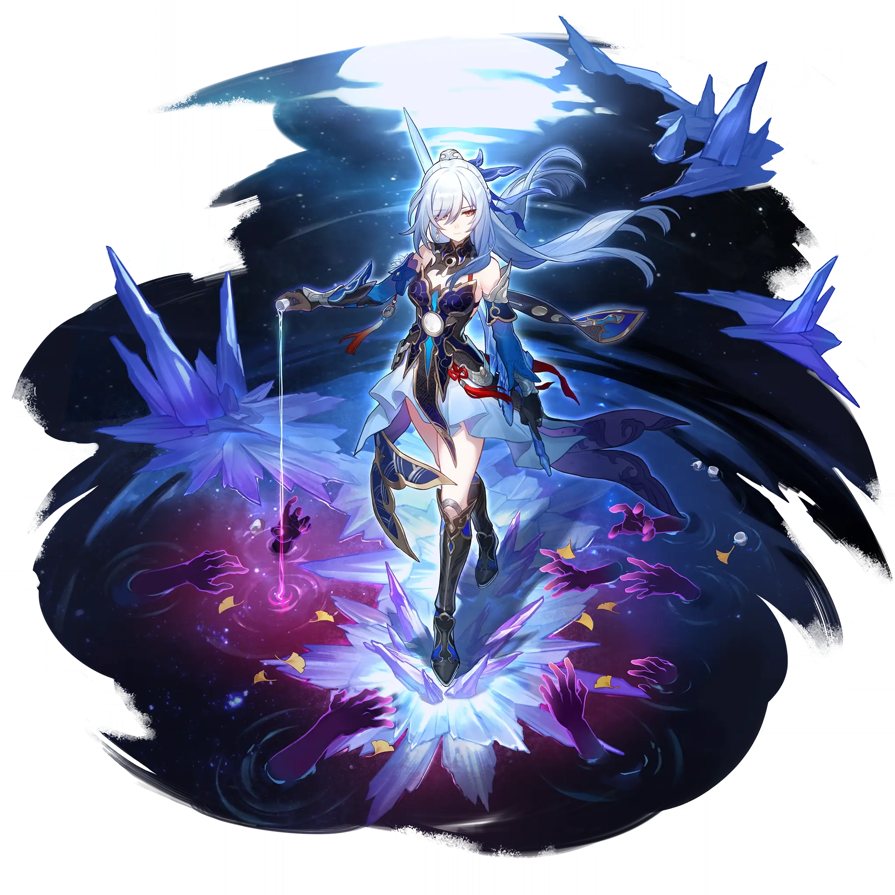

Jingliu
Best Jingliu build guide for Honkai Star Rail. See Jingliu's best Relics, Light Cones, teams, Eidolons, Trace priority, and how to play Jingliu.
🔍 Detail Skill
Semua skill aktif dan pasif beserta efeknya.
Deals Ice DMG equal to #1[i]%of Jingliu's Max HP to one designated enemy.
Deals Ice DMG equal to #1[i]% of Jingliu's Max HP to one designated enemy and obtains 1 stack of Syzygy.
Deals Ice DMG equal to #1[i]% of Jingliu's Max HP to one designated enemy, and deals Ice DMG equal to #2[i]% of Jingliu's Max HP to adjacent enemies. Consumes 1 stack(s) of Syzygy. Using this ability does not consume Skill Points.
When Jingliu has 2 stacks of Syzygy, she enters the Spectral Transmigration state, additionally gains 1 stack of Syzygy, action advances by 100%, and her CRIT Rate increases by #2[i]%. Then, Jingliu's Skill Transcendent Flash is enhanced to Moon On Glacial River, and only this enhanced Skill is available for use in battle. When Jingliu uses an attack in the Spectral Transmigration state, she consu
After using this Technique, creates a Special Dimension around Jingliu that lasts for #3[i seconds, and all enemies in this Special Dimension will become Frozen. After entering combat with enemies in the Special Dimension, Jingliu immediately regenerates #6[i] Energy and obtains #1[i] stack(s) of Syzygy, with a #2[i]% base chance of Freezing enemy targets for #4[i] turn(s). While Frozen, enemy tar
⚔ Light Cone Terbaik
Diurutkan dari yang paling kuat. Persentase menunjukkan performa relatif terhadap pilihan terbaik.
💎 Relic Set Terbaik
Set terbaik untuk karakter ini, diurutkan berdasarkan prioritas.
📊 Stat Utama
Stat yang dicari pada tiap slot.
👥 Tim yang Direkomendasikan
Karakter yang sering dipasangkan bersama Jingliu.
 Hyacine
Hyacine
 Sunday
Sunday
 Bronya
Bronya
 Trailblazer • Remembrance
Trailblazer • Remembrance
 Silver Wolf
Silver Wolf
🔗 Lanjutkan
Build ini dirangkum dari Prydwen Institute. Starwise tidak menghitung sendiri. Angka bisa berubah setelah patch atau karakter baru rilis.